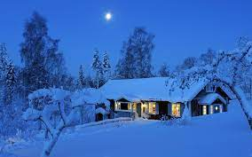

info
Spiti Valley is a cold desert mountain valley located high in the
Himalayas in the north-eastern part
of the northern Indian state of Himachal Pradesh. The name "Spiti" means
"The middle land", i.e. the land between Tibet and India.
What is Spiti valley famous for? Spiti valley is famous for its natural beauty
and cultural heritage. Tabo monastery is one of the most prominent attractions in Spiti.
The monasteries in Spiti are renowned for spectacular murals, ancient temples, and several stupas.
But now Spiti Valley is finally opening to tourists with certain guidelines. Tourists will not be
allowed entry to the Kibber Village and Kibber Wildlife Sanctuary. Also, they need to
undergo RAT/RT-PCR tests done from an authorised laboratory or hospital. It is mandatory
for everyone to wear face masks.
winter

The best time to visit this isolated yet spectacular region of Himachal
Pradesh is during the summers from May to October. It is in fact the only
time when the roads remain clear of ice. In the winter season, Lahaul &
Spiti hides under the thick blanket of snow.